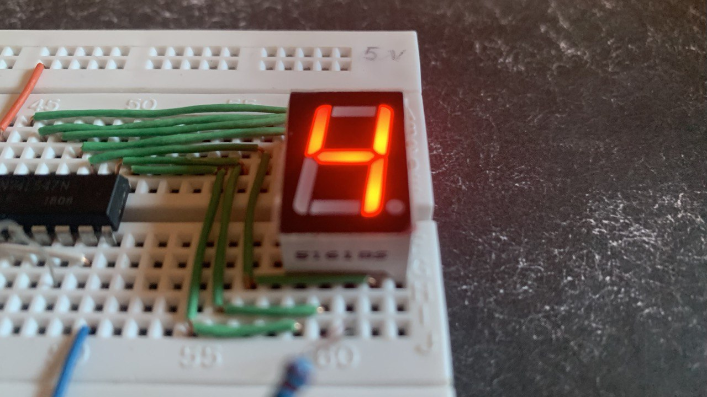
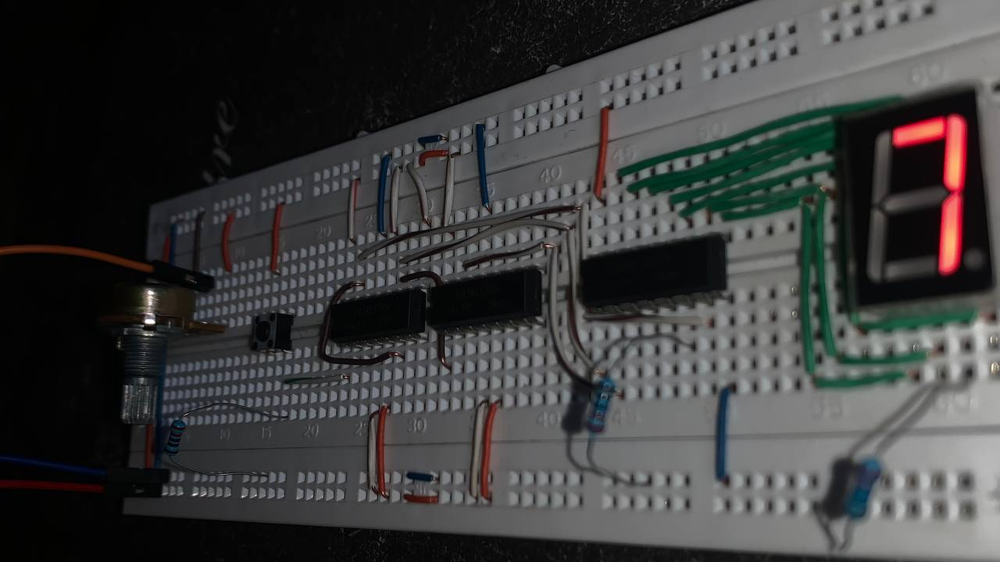
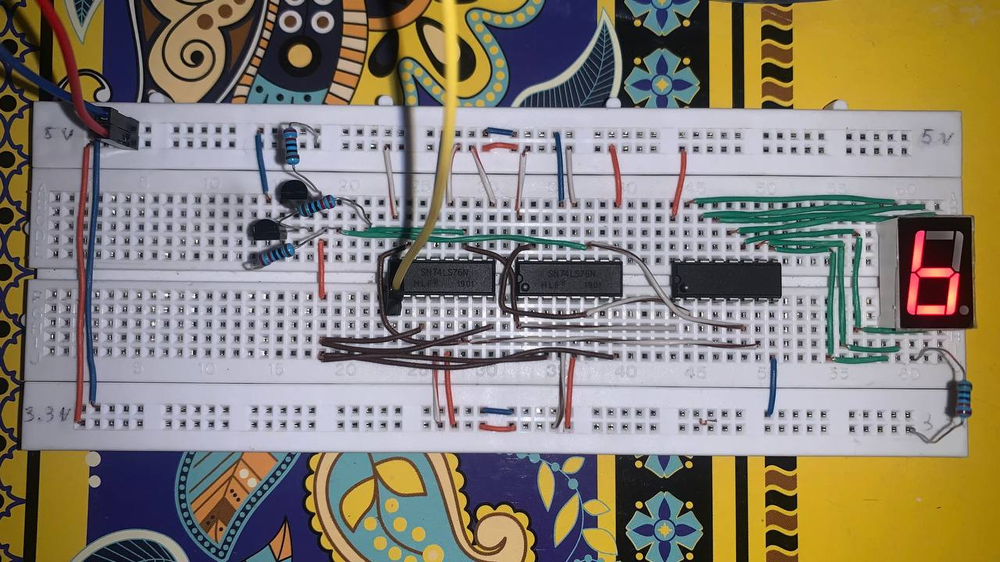
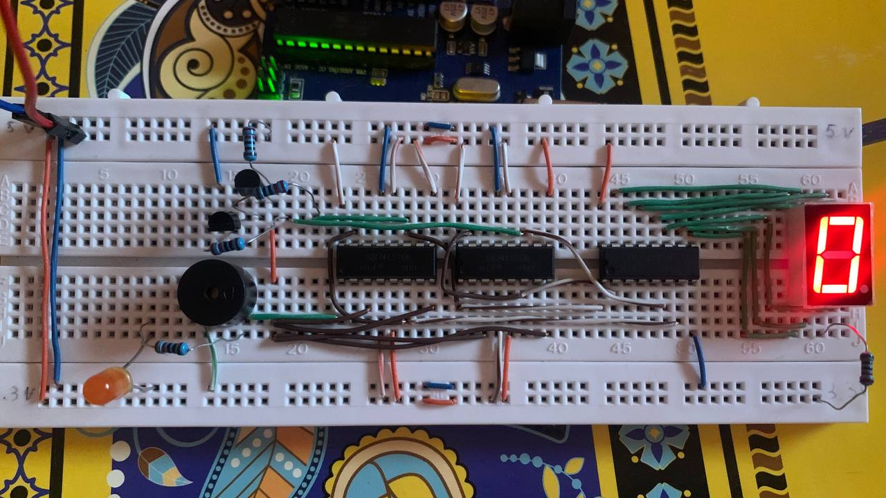

Présentation du Projet
Ce projet avait pour objectif de concevoir un compteur asynchrone modulo 10, capable de compter de 0 à 9, en utilisant des circuits logiques de base. Un compteur asynchrone est un circuit séquentiel dans lequel les bascules ne sont pas déclenchées simultanément par la même horloge, ce qui peut entraîner un léger décalage dans les transitions d'état.
Le projet visait à comprendre le fonctionnement de ce type de compteur, à le réaliser progressivement, et à intégrer un afficheur 7 segments pour visualiser les états comptés.
Matériel utilisé :
- Bascules JK (CI 7476)
- Décodeur BCD vers 7 segments (CI 7447)
- Afficheur 7 segments (anode commune)
- Boutons poussoirs
- Horloge (manuelle ou Arduino)
- Potentiomètre (contrôle de fréquence)
- Portes logiques (dont NAND avec transistors)
- Résistances et câblage
Étapes de Réalisation
1. Test de l’Afficheur 7 segments
Dans un premier temps, les chiffres de 0 à 9 ont été simulés manuellement à l’aide de 4 boutons poussoirs reliés à un décodeur BCD (7447), qui contrôle un afficheur 7 segments.
2. Réalisation d’un compteur Modulo 8
Ensuite, un compteur modulo 8 (0 à 7) a été réalisé à l’aide de 3 bascules JK du circuit 7476. Un bouton permet d’incrémenter la valeur. Par la suite, un Arduino a été utilisé comme générateur d’horloge, avec un potentiomètre pour régler la vitesse du comptage.
3. Compteur limité à 10 (Modulo 15 tronqué)
Pour limiter le comptage à 10 (de 0 à 9), une porte NAND a été ajoutée pour détecter l’état 10 (en binaire) et réinitialiser automatiquement le compteur. Cette porte a été construite manuellement à l’aide de transistors NPN.
4. Intégration de Signalisation (LED + Buzzer)
Enfin, une signalisation visuelle et sonore a été ajoutée : une LED s’allume brièvement et un buzzer émet un son à chaque changement de valeur. Cela permet une meilleure visibilité dans des environnements sans écran ou bruyants.
